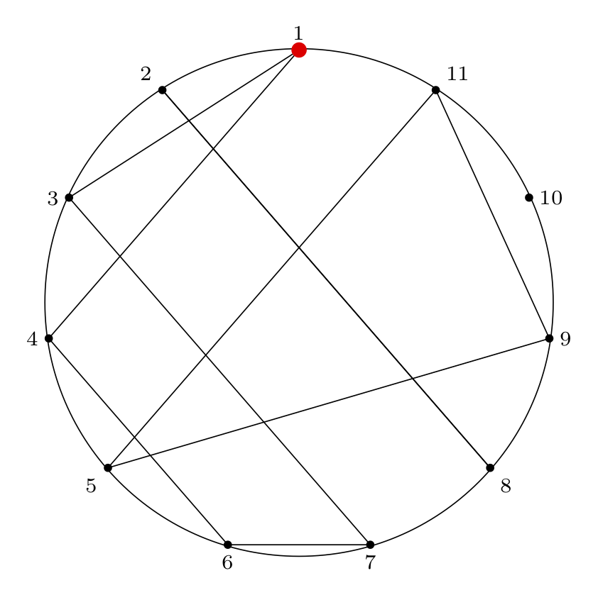
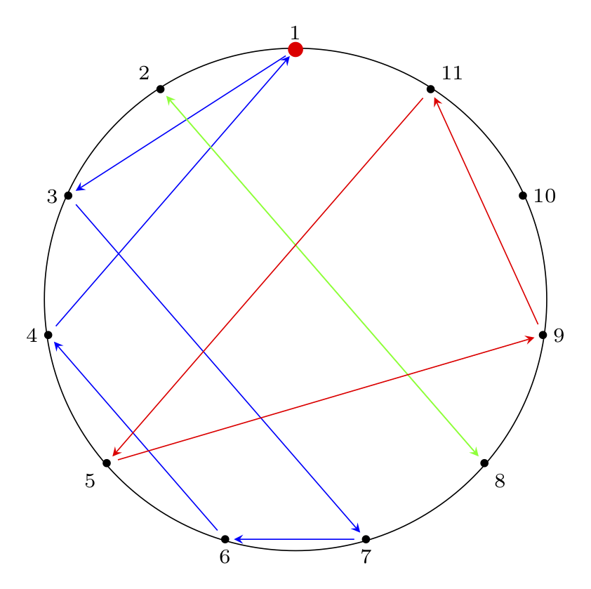

This is Part 1 of an N-part series.
- The Josephus Problem: Part 1: The Problem
- The Josephus Problem: Part 2: Two Examples
- The Josephus Problem: Part 3: Solving the Double Step Case
The Josephus Problem and Variations
The following problem, Cat and Mice, is Puzzle 88 in Boris Kordemsky's The Moscow Puzzles.
Purrer has decided to take a nap. He dreams he is encircled by \(n\) mice: \(n-1\) gray and 1 white. He hears is owner saying, "Purrer, you are to eat each \(m\)-th mouse, keeping the same direction. The last mouse you eat must be the white one.
Which mouse should he start with?
This problem presents a scenario that is nearly identical to a classic problem that has a more grisly backstory: the Josephus problem.
Donald Knuth presents a more unsettling version of this problem, so I'll just let his (rather gleeful) description of the original problem suffice (except - what's this "we" stuff?)
From Section 1.3.2 of The Art of Computer Programming (Vol. 1), Exercise 22 presents the Josephus Problem:
22. (The Josephus Problem.) There are \(n\) men arranged in a circle. Beginning with a particular position, we count around the circle and brutally execute every \(m^{th}\) man (the circle closing as men are decapitated). For example, the execution order when \(n = 8, m = 4\) is \(54613872\): the first man is fifth to go, the second man is fourth, etc. Write a program which prints outs the order of execution when \(n = 24, m = 11\). Try to design a clever algorithm that works at high speed when \(n\) and \(m\) are large.
The Sushi Boat Variation
You are at the sushi boat restaurant, where plates of sushi in tiny boats float by in front of you.
There are \(n\) plates of sushi, each on a sushi boat. Each plate of sushi is labeled \(1 \dots n\) and arranged in order on the boats.
Beginning at plate 1, you count \(m\) plates of sushi, stopping at the \(m^{th}\) boat and taking the plate of sushi off the boat to eat it.
In what order will the sushi plates be stacked when you are done?
Which plate of sushi will be eaten last?
More Backstory
More background on the Josephus problem and its various solutions is given in a letter to the editor from the Fibonacci Quarterly, Issue 1 of 1976 (Part 1 and Part 2) written in response to an article that gave a solution to the problem of "Idiot's Roulette" (identical to the Josephus problem as presented above) without referencing the Josephus problem. Here is the original article.
The Tools
To solve the Josephus problem, we need to use several conceptual and computational tools. Below we cover some notation we will use and give links to pages on the charlesreid1.com wiki that are useful.
Permutations
We can think of the outcome of the Josephus problem as a "Josephus permutation" - a permutation that reorders the sushi plates in the circle (numbered by their positoin in the circle) into the order in which they are removed from the circle.
For example, in Knuth's problem statement, he gives an example of \(n = 8, m = 4\) (eating every 4th plate of sushi, in a train of 8 sushi boats), which results in the plates being removed in the following order:
To write this permutation using mathematical notation, we write two rows. The top row is the ordering of plates in the circle, the "natural" ordering, and the second row is the order of removal of plates, which is the Josephus permutation:
As Knuth would point out, this Josephus permutation can be written in 40,319 other equivalent ways (that's 8! total, minus the 1 way shown above) by reordering the columns (as long as we reorder the columns in the top and bottom rows in the same way).
We can read this permutation from left to right as follows:
- The first sushi plate (labeled 1) will be eaten fifth;
- The second sushi plate (labeled 2) will be eaten fourth;
- etc.
Ordering the permutation as above (circle index on top, removal index on bottom) makes it easy to answer the second question, "Which sushi plate will be eaten last?"
We find 8 in the bottom row (the removal index), and read the corresponding number in the top row (the plate number/circle position), plate 6.
If we wish to answer the first question, "in what order will the plates be removed," we have a bit more work to do. We mentioned that the above permutation is 1 of a total of 40,320 equivalent ways of writing the same permutation. Another way of writing it would be to maintain the pairing between top and bottom but sort the bottom elements:
Now we can find the order of the plates by reading the top row right-to-left. The last plate removed is plate 6, so that will be on top of the stack of plates (stacks are first in, last out).
We cover permutations and permutation notation in the context of Rubiks Cubes on the Rubiks Cube/Permutations page of the charlesreid1.com wiki.
Cycles
While the above permutation notation is useful, the variety of ways of expressing the same permutation is inconvenient. This is where cycles become useful - cycles are a way of implicitly representing both rows of the permutation.
To do this, we "thread" our way through the permutation to create the cycle of which items move to which positions.
Starting with the left-most column of the permutation,
we know that \(1 \rightarrow 5\). Now we find the column that has 5 in the top: the fifth column. We write \(5 \rightarrow 3\). Now we find the column with 3 in the top: the third column. We write \(3 \rightarrow 6\). Next, we write \(6 \rightarrow 8\), then \(8 \rightarrow 2\), then \(2 \rightarrow 4\). Once we see that the last step of the cycle is \(4 \rightarrow 1\), which brings us back to the beginning, we write that closed cycle in parentheses. If we have elements left, we repeat the procedure starting with any of the remaining elements. Sometimes there is a single cycle, and sometimes there are multiple cycles. In this case we have two cycles:
This indicates that 7 does not change position, i.e., the 7th plate of sushi is eaten 7th.
This notation is very convenient for finding solutions, and it turns out that Knuth gives a general solution procedure for the Josephus problem that involves a rather complicated application of the cycle notation, so a solid understanding of cycle notation is important.
We cover cycle notation in the context of Rubiks Cubes on the Rubiks Cube/Permutations page of the charlesreid1.com wiki (in particular, the sections on Permutation Algebra that cover intercalation products).
Circular Linked Lists
Among the many ways of solving the Josephus problem, the easiest method is to just carry out the procedure by hand to find the final Josephus permutation, then use it to answer the original question. This technique is referred to as the simulation technique.
This technique would become infeasible if we were to ask more difficult versions of the Josephus problem, such as posing a scenario where there are 5 million plates of sushi, and we wish to know which position (which plate of sushi) will be eaten 2,999,998th, and we also wish to have the answer instantaneously.
If we're dealing with smaller values of n and m, though, we can simulate a solution to the Josephus problem using a circular linked list.
Linked Lists
Briefly, a linked list is a type of list whose elements consist of nodes, small bundles containing a piece of data (the list item's value) and pointers to other nodes (the next and/or previous elements in the list).
See Linked Lists for notes on linked lists and some answers to textbook exercises.
See Lists Study Guide for a summary of important information about and properties of lists.
Circular Linked Lists:
A circular linked list is just what it sounds like: each of the elements points to the next element, and the last element in the list points to the first element in the list. We can use the list by maintaining a pointer to a particular item (the first item in the list).
We can insert items into the list by creating a new node, and inserting it between two nodes (e.g., the front and back of the list) by updating the pointers of the front and back nodes to point to the new list item.
Usefully, we can also remove items from the list with some pointer manipulation. To remove a node, we modify the next/previous pointers of the nodes before/after the doomed node so that they point to each other instead of to the doomed node.
This allows us to explicitly model the sushi boat (a.k.a. the "kill ring") in the Josephus problem.
Circular linked lists are covered on the charlesreid1.com wiki on the Linked Lists/Java/Circular page, and are implemented in Java in the cs/java repo: https://git.charlesreid1.com/cs/java/src/branch/master/lists/linked-lists
A Python implementation used to solve the Josephus problem is available in the cs/josephus repo: repo: https://git.charlesreid1.com/cs/josephus
TeX for Diagrams
In addition to writing The Art of Computer Programming, which has remained a gold standard algorithm textbook for over 40 years, Knuth also invented the TeX typesetting system, which is also the gold standard for typesetting mathematical equations.
We use the PGF/TikZ package to draw polygons that are useful in illustrating the circles of the Josephus problem and in visualizing various permutations.
A few examples and links to Github Gists with TeX code follow.
Empty Josephus Circle Diagram

Here is the TeX code to generate this diagram:
\documentclass[border=2mm]{standalone}
\usepackage{tikz}
\usepackage{xintexpr}
\usetikzlibrary{shapes.geometric}
\begin{document}
\begin{tikzpicture}[scale=3]
% make a node with variable name pol (with the list of features given) at the location (0,0), and don't label it
\node (pol) [draw=none, thick, black!90!black,rotate=0,minimum size=6cm,regular polygon, regular polygon sides=11] at (0,0) {};
% anchor is "corner 1"
% label is 1/2/3/4/etc
% placement is placement w.r.t. coordinate location
\foreach \anchor/\label/\placement in
{corner 1/$1$/above,
corner 2/$2$/above left,
corner 3/$3$/left,
corner 4/$4$/left,
corner 5/$5$/below left,
corner 6/$6$/below,
corner 7/$7$/below,
corner 8/$8$/below right,
corner 9/$9$/right,
corner 10/${10}$/right,
corner 11/${11}$/above right}
\draw[shift=(pol.\anchor)] plot coordinates{(0,0)} node[font=\scriptsize,\placement] {\label};
% draw a circle connecting all points
\draw circle[radius=1.01cm];
% Draw a red dot at the starting point
\filldraw[red] (pol.corner 1) circle[radius=0.8pt];
% optional: black dots at each circle location
\filldraw[black] (pol.corner 2) circle[radius=0.4pt];
\filldraw[black] (pol.corner 3) circle[radius=0.4pt];
\filldraw[black] (pol.corner 4) circle[radius=0.4pt];
\filldraw[black] (pol.corner 5) circle[radius=0.4pt];
\filldraw[black] (pol.corner 6) circle[radius=0.4pt];
\filldraw[black] (pol.corner 7) circle[radius=0.4pt];
\filldraw[black] (pol.corner 8) circle[radius=0.4pt];
\filldraw[black] (pol.corner 9) circle[radius=0.4pt];
\filldraw[black] (pol.corner 10) circle[radius=0.4pt];
\filldraw[black] (pol.corner 11) circle[radius=0.4pt];
\end{tikzpicture}
\end{document}
Josephus Circle Diagram With Permutation Paths
Next, we can illustrate cycles in the permutation by drawing paths between connected nodes.
The edges are directed (1 -> 4 is not the
same as 4 -> 1). We draw both directed and
undirected versions.


The code to generate these diagrams is below.
Undirected Paths:
\documentclass[border=2mm]{standalone}
\usepackage{tikz}
\usepackage{xintexpr}
\usetikzlibrary{shapes.geometric}
\begin{document}
\begin{tikzpicture}[scale=3]
% make a node with variable name pol (with the list of features given) at the location (0,0), and don't label it
\node (pol) [draw=none, thick, black!90!black,rotate=0,minimum size=6cm,regular polygon, regular polygon sides=11] at (0,0) {};
% anchor is "corner 1"
% label is 1/2/3/4/etc
% placement is placement w.r.t. coordinate location
\foreach \anchor/\label/\placement in
{corner 1/$1$/above,
corner 2/$2$/above left,
corner 3/$3$/left,
corner 4/$4$/left,
corner 5/$5$/below left,
corner 6/$6$/below,
corner 7/$7$/below,
corner 8/$8$/below right,
corner 9/$9$/right,
corner 10/${10}$/right,
corner 11/${11}$/above right}
\draw[shift=(pol.\anchor)] plot coordinates{(0,0)} node[font=\scriptsize,\placement] {\label};
% solution for n = 11, m = 4:
% ( 1 3 7 6 4 ) ( 2 8 ) ( 5 9 11 ) ( 10 )
% internal paths
% cycle (1 3 7 6 4)
\path [-] (pol.corner 1) edge (pol.corner 3);
\path [-] (pol.corner 3) edge (pol.corner 7);
\path [-] (pol.corner 7) edge (pol.corner 6);
\path [-] (pol.corner 6) edge (pol.corner 4);
\path [-] (pol.corner 4) edge (pol.corner 1);
% cycle 2 (2 8)
\path [-] (pol.corner 2) edge (pol.corner 8);
\path [-] (pol.corner 8) edge (pol.corner 2);
% cycle 3 (5 9 11 )
\path [-] (pol.corner 5) edge (pol.corner 9);
\path [-] (pol.corner 9) edge (pol.corner 11);
\path [-] (pol.corner 11) edge (pol.corner 5);
% draw a circle connecting all points
\draw circle[radius=1.01cm];
% Draw a red dot at the starting point
\filldraw[red] (pol.corner 1) circle[radius=0.8pt];
% optional: black dots at each circle location
\filldraw[black] (pol.corner 2) circle[radius=0.4pt];
\filldraw[black] (pol.corner 3) circle[radius=0.4pt];
\filldraw[black] (pol.corner 4) circle[radius=0.4pt];
\filldraw[black] (pol.corner 5) circle[radius=0.4pt];
\filldraw[black] (pol.corner 6) circle[radius=0.4pt];
\filldraw[black] (pol.corner 7) circle[radius=0.4pt];
\filldraw[black] (pol.corner 8) circle[radius=0.4pt];
\filldraw[black] (pol.corner 9) circle[radius=0.4pt];
\filldraw[black] (pol.corner 10) circle[radius=0.4pt];
\filldraw[black] (pol.corner 11) circle[radius=0.4pt];
\end{tikzpicture}
\end{document}
Directed Paths:
\documentclass[border=2mm]{standalone}
\usepackage{tikz}
\usepackage{xintexpr}
\usetikzlibrary{shapes.geometric}
\begin{document}
\begin{tikzpicture}[scale=3]
% make a node with variable name pol (with the list of features given) at the location (0,0), and don't label it
\node (pol) [draw=none, thick, black!90!black,rotate=0,minimum size=6cm,regular polygon, regular polygon sides=11] at (0,0) {};
% anchor is "corner 1"
% label is 1/2/3/4/etc
% placement is placement w.r.t. coordinate location
\foreach \anchor/\label/\placement in
{corner 1/$1$/above,
corner 2/$2$/above left,
corner 3/$3$/left,
corner 4/$4$/left,
corner 5/$5$/below left,
corner 6/$6$/below,
corner 7/$7$/below,
corner 8/$8$/below right,
corner 9/$9$/right,
corner 10/${10}$/right,
corner 11/${11}$/above right}
\draw[shift=(pol.\anchor)] plot coordinates{(0,0)} node[font=\scriptsize,\placement] {\label};
% solution for n = 11, m = 4:
% ( 1 3 7 6 4 ) ( 2 8 ) ( 5 9 11 ) ( 10 )
% internal paths
% cycle (1 3 7 6 4)
\path [->, shorten > = 3 pt, blue, shorten < = 4 pt, > = stealth] (pol.corner 1) edge (pol.corner 3);
\path [->, shorten > = 3 pt, blue, shorten < = 4 pt, > = stealth] (pol.corner 3) edge (pol.corner 7);
\path [->, shorten > = 3 pt, blue, shorten < = 4 pt, > = stealth] (pol.corner 7) edge (pol.corner 6);
\path [->, shorten > = 3 pt, blue, shorten < = 4 pt, > = stealth] (pol.corner 6) edge (pol.corner 4);
\path [->, shorten > = 3 pt, blue, shorten < = 4 pt, > = stealth] (pol.corner 4) edge (pol.corner 1);
% cycle 2 (2 8)
\path [->, shorten > = 3 pt, green, shorten < = 4 pt, > = stealth] (pol.corner 2) edge (pol.corner 8);
\path [->, shorten > = 3 pt, green, shorten < = 4 pt, > = stealth] (pol.corner 8) edge (pol.corner 2);
% cycle 3 (5 9 11 )
\path [->, shorten > = 3 pt, red, shorten < = 4 pt, > = stealth] (pol.corner 5) edge (pol.corner 9);
\path [->, shorten > = 3 pt, red, shorten < = 4 pt, > = stealth] (pol.corner 9) edge (pol.corner 11);
\path [->, shorten > = 3 pt, red, shorten < = 4 pt, > = stealth] (pol.corner 11) edge (pol.corner 5);
% draw a circle connecting all points
\draw circle[radius=1.01cm];
% draw a red dot at the starting point
\filldraw[red] (pol.corner 1) circle[radius=0.8pt];
% optional: black dots at each circle location
\filldraw[black] (pol.corner 2) circle[radius=0.4pt];
\filldraw[black] (pol.corner 3) circle[radius=0.4pt];
\filldraw[black] (pol.corner 4) circle[radius=0.4pt];
\filldraw[black] (pol.corner 5) circle[radius=0.4pt];
\filldraw[black] (pol.corner 6) circle[radius=0.4pt];
\filldraw[black] (pol.corner 7) circle[radius=0.4pt];
\filldraw[black] (pol.corner 8) circle[radius=0.4pt];
\filldraw[black] (pol.corner 9) circle[radius=0.4pt];
\filldraw[black] (pol.corner 10) circle[radius=0.4pt];
\filldraw[black] (pol.corner 11) circle[radius=0.4pt];
\end{tikzpicture}
\end{document}
Next Steps: Examples and Solutions
So far in Part 1 we have covered some common forms of the Josephus problem.
In Part 2 we'll cover some examples of different \(n, m\) values (\(n\) is circle size, \(m\) is skip length) and show how the process plays out.
In Part 3 we will show the solution of the special case of \(m = 2\) (the double-step case).
In Part 4 we will show several ways to solve the general case, and walk through some examples where we apply the solution procedure.